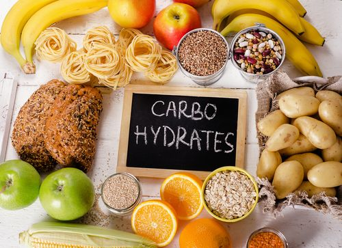
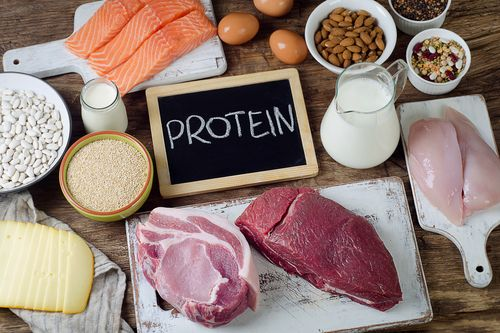
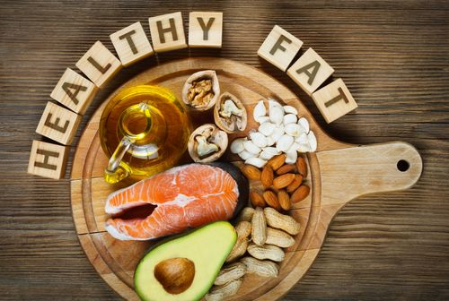
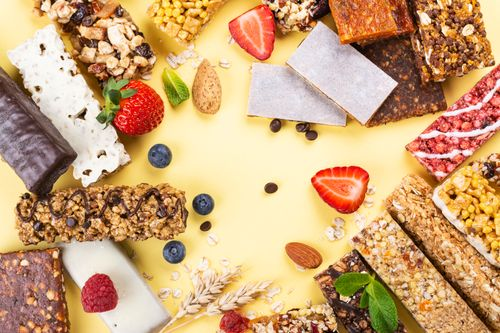
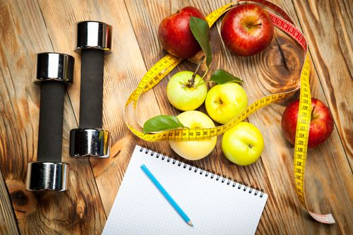

Nutrition To Add To Your Gym Diet Plan
There are mainly three macronutrients that play a crucial role in maintaining bodily functions and even promote changes in strength and composition – they are carbs, proteins, and fats and it is essential that we consume all three macros in ample quantities to optimize progress accordingly. Let’s see what are the vital nutrients you must include in your gym diet plan for muscle gain and weight loss.
Carbohydrates
Firstly, carbohydrates are the primary source of energy for the body and therefore play the most substantial role in fueling exercise. There are two different types of carbohydrates i.e. complex and simple. The names give an indication of the time taken to digest complex carbs that take a longer time period to digest than simple carbs.
Protein
Specifically, the majority of gym-goers will be well aware that consuming protein is important. Likewise, the reason why protein is so important is because it plays a key role in recovery and repair. A gym diet plan must include protein. During exercise, the body is exposed to strains and stresses. This cause damage to occur to the muscles at a microscopic level. So, in order to repair the damage, protein is needed. Without it, recovery periods will be extended and chronic fatigue may become a factor.
Fats
Fats are often incorrectly seen as the primary reason for fat gain. However, fats are not responsible for this and actually play a key role in the absorption and transport of nutrients. In addition, they can have a positive impact on heart health and hormone production.
Gym Diet - Pre-Workout Foods
Focus on carbohydrates as all pre-workout meals or snacks to provide the body with energy to last the full session. So, if energy levels are sub-optimal, then performance will suffer and have a consequent impact on our rate of adaptation.
Next, focus on simple carbohydrates in a gym diet plan as they take less time to digest and provide the body with energy. It may even be recommended to consume some simple carbs during a workout to maintain energy levels and performance.
For example, white bread, jam, granola, cereal, sports drinks, and fruit are all viable options for a pre-workout, energy-boosting snack.
Gym Diet - Post-Workout Foods
The purpose of post-workout nutrition is two-fold, firstly, to promote muscle recovery and secondly to replenish energy. Therefore, the focus should once again be on consuming good quality protein and carb foods.
Furthermore, there is a widely held belief that protein timing is extremely important for maximizing growth. However, a number of recently based studies have indicated that total daily protein intake is of greater importance than the timing.
Therefore, High-protein foods such as lean beef, chicken, pork, turkey, eggs, dairy, seeds, quinoa, and nuts should be prioritized. Also, protein supplements, like protein shakes and bars,can serve as a convenient tool for effectively boosting protein intake.
Ideal 7 Day Gym Diet Chart Plan
While calories and macronutrients are important, the ideal gym diet must be one that positively influences health. This is a diet that is rich in vitamins and minerals where all three macronutrients are consumed and nutrient-sparse foods are restricted.
Meanwhile, let’s find a 7-day gym diet plan for you:
Gym Diet Plan Cart- Day 1
| Breakfast | Oats, Banana, Pancakes with Protein Shake |
| Lunch | Multigrain roti along with palak chicken Avocado bell pepper salad |
| Pre-Workout Snack | Bananas |
| Dinner (Post-Workout) |
Brown rice peas paneer curry sprouts vegetable salad |
Gym Diet Plan Cart- Day 2
| Breakfast | Oatmeal with Greek Yogurt Seasonal fruits Mango Juice |
| Lunch | Multigrain roti fish curry vegetable salad |
| Pre-Workout Snack | Toast with Jam |
| Dinner (Post-Workout) |
Broken wheat khichidi along with carrot raita egg white, and vegetable salad |
Gym Diet Plan Cart- Day 3
| Breakfast | Poached Eggs whole Grain Toast Protien Shake |
| Lunch | Quinoa upma chicken and broccoli salad |
| Pre-Workout Snack | Mixedd Nuts & Dried Fruits |
| Dinner (Post-Workout) |
vegetable curry brown rice, cucumber raita Baby Potatoes, Chocolate Milk |
Gym Diet Plan Cart- Day 4
| Breakfast | Oatmeal with Honey Apple Juice |
| Lunch | Grilled Chicken Salad, Whole Grain Bread |
| Pre-Workout Snack | Toast with Peanut Butter |
| Dinner (Post-Workout) |
Mwthi Chicken, Brown Rice Broccoli Protein Shake |
Gym Diet Plan Cart- Day 5
| Breakfast | Scrambled Egg Whole Grain Toast Smoothie |
| Lunch | Grilled chicken Vegetable roti roll, Green Salad |
| Pre-Workout Snack | Mixed Nuts & Dried Fruits |
| Dinner (Post-Workout) |
Chicken Stir Fry, Spring Onion Peppers & Broccoli Chocolate Milk |
Gym Diet Plan Cart- Day 6
| Breakfast | Oatmeal Whole Grain Toast Oranje Juice |
| Lunch | Whole Grain Chicken wrap Black Beans, Peppers & Greek Yoguri |
| Pre-Workout Snack | Apple with peanut butter |
| Dinner (Post-Workout) |
Keema Bhurji and multigrain roti Sweet Potato Protein Shake |
Gym Diet Plan Cart- Day 7
| Breakfast | Oatmeal with Nuts Smothie |
| Lunch | Whole wheat pasta with with chicken and green salad |
| Pre-Workout Snack | Granola or Cereal |
| Dinner (Post-Workout) |
Fish curry Boiled green peas salad Brown Rice, Garden Peas, Milk |
On the whole, the above guide will prove to be useful, yet be aware that when it comes to nutrition, everyone is different. Not only will physical attributes determine your nutritional requirements, the goals that you have set will also influence your diet.
Two goals that are extremely common are fat loss and muscle growth. So, in order to lose fat, calories must be restricted which will cause stored body fat to be broken down. On the other hand, as for muscle growth, calorie intake must be increased to build significant muscle size as additional calories are required to accelerate the recovery process. A gym diet plan must be a combination of micro and macro nutrients.
Foods to Avoid in Your Gym Diet Plan
The following three foods should be avoided or limited as far as possible.
Trans fats are a type of dietary fat that has consistently been shown to impact health. While trans fats do naturally occur in small quantities, artificial trans fats are notoriously hazardous. Artificial trans fats can be found in baked goods, fast food, and many snack foods.
Similarly, many simple carbohydrate foods do not have great nutritional value and contain a high amount of sugar. While they may be useful for a short term energy boost, consuming a large number of simple carbs can be detrimental.
Although technically not a food, alcohol is a substance that should also be limited as far as possible. Since there is much research to indicate that alcohol negatively impacts recovery and may even interfere with the muscle-building process, it might be good to stay away from it. So, it is not great to include it when you are detoxifying with your gym diet plan.